Number-theoretical, combinatorial and integer functions¶
For factorial-type functions, including binomial coefficients, double factorials, etc., see the separate section Factorials and gamma functions.
Fibonacci numbers¶
fibonacci()/fib()¶
- mpmath.fibonacci(n, **kwargs)¶
fibonacci(n) computes the
 -th Fibonacci number,
-th Fibonacci number,  . The
Fibonacci numbers are defined by the recurrence
. The
Fibonacci numbers are defined by the recurrence  with the initial values
with the initial values  ,
,  . fibonacci()
extends this definition to arbitrary real and complex arguments
using the formula
. fibonacci()
extends this definition to arbitrary real and complex arguments
using the formula
where
 is the golden ratio. fibonacci() also uses this
continuous formula to compute for extremely large , where
calculating the exact integer would be wasteful.
is the golden ratio. fibonacci() also uses this
continuous formula to compute for extremely large , where
calculating the exact integer would be wasteful.For convenience, fib() is available as an alias for fibonacci().
Basic examples
Some small Fibonacci numbers are:
>>> from mpmath import * >>> mp.dps = 15; mp.pretty = True >>> for i in range(10): ... print(fibonacci(i)) ... 0.0 1.0 1.0 2.0 3.0 5.0 8.0 13.0 21.0 34.0 >>> fibonacci(50) 12586269025.0
The recurrence for
extends backwards to negative :>>> for i in range(10): ... print(fibonacci(-i)) ... 0.0 1.0 -1.0 2.0 -3.0 5.0 -8.0 13.0 -21.0 34.0
Large Fibonacci numbers will be computed approximately unless the precision is set high enough:
>>> fib(200) 2.8057117299251e+41 >>> mp.dps = 45 >>> fib(200) 280571172992510140037611932413038677189525.0
fibonacci() can compute approximate Fibonacci numbers of stupendous size:
>>> mp.dps = 15 >>> fibonacci(10**25) 3.49052338550226e+2089876402499787337692720
Real and complex arguments
The extended Fibonacci function is an analytic function. The property
 holds for arbitrary
holds for arbitrary  :
:>>> mp.dps = 15 >>> fib(pi) 2.1170270579161 >>> fib(pi-1) + fib(pi-2) 2.1170270579161 >>> fib(3+4j) (-5248.51130728372 - 14195.962288353j) >>> fib(2+4j) + fib(1+4j) (-5248.51130728372 - 14195.962288353j)
The Fibonacci function has infinitely many roots on the negative half-real axis. The first root is at 0, the second is close to -0.18, and then there are infinitely many roots that asymptotically approach
 :
:>>> findroot(fib, -0.2) -0.183802359692956 >>> findroot(fib, -2) -1.57077646820395 >>> findroot(fib, -17) -16.4999999596115 >>> findroot(fib, -24) -23.5000000000479
Mathematical relationships
For large
,  approaches the golden ratio:
approaches the golden ratio:>>> mp.dps = 50 >>> fibonacci(101)/fibonacci(100) 1.6180339887498948482045868343656381177203127439638 >>> +phi 1.6180339887498948482045868343656381177203091798058
The sum of reciprocal Fibonacci numbers converges to an irrational number for which no closed form expression is known:
>>> mp.dps = 15 >>> nsum(lambda n: 1/fib(n), [1, inf]) 3.35988566624318
Amazingly, however, the sum of odd-index reciprocal Fibonacci numbers can be expressed in terms of a Jacobi theta function:
>>> nsum(lambda n: 1/fib(2*n+1), [0, inf]) 1.82451515740692 >>> sqrt(5)*jtheta(2,0,(3-sqrt(5))/2)**2/4 1.82451515740692
Some related sums can be done in closed form:
>>> nsum(lambda k: 1/(1+fib(2*k+1)), [0, inf]) 1.11803398874989 >>> phi - 0.5 1.11803398874989 >>> f = lambda k:(-1)**(k+1) / sum(fib(n)**2 for n in range(1,int(k+1))) >>> nsum(f, [1, inf]) 0.618033988749895 >>> phi-1 0.618033988749895
References
Bernoulli numbers and polynomials¶
bernoulli()¶
- mpmath.bernoulli(n)¶
Computes the nth Bernoulli number,
 , for any integer
, for any integer  .
.The Bernoulli numbers are rational numbers, but this function returns a floating-point approximation. To obtain an exact fraction, use bernfrac() instead.
Examples
Numerical values of the first few Bernoulli numbers:
>>> from mpmath import * >>> mp.dps = 15; mp.pretty = True >>> for n in range(15): ... print("%s %s" % (n, bernoulli(n))) ... 0 1.0 1 -0.5 2 0.166666666666667 3 0.0 4 -0.0333333333333333 5 0.0 6 0.0238095238095238 7 0.0 8 -0.0333333333333333 9 0.0 10 0.0757575757575758 11 0.0 12 -0.253113553113553 13 0.0 14 1.16666666666667
Bernoulli numbers can be approximated with arbitrary precision:
>>> mp.dps = 50 >>> bernoulli(100) -2.8382249570693706959264156336481764738284680928013e+78
Arbitrarily large
are supported:>>> mp.dps = 15 >>> bernoulli(10**20 + 2) 3.09136296657021e+1876752564973863312327
The Bernoulli numbers are related to the Riemann zeta function at integer arguments:
>>> -bernoulli(8) * (2*pi)**8 / (2*fac(8)) 1.00407735619794 >>> zeta(8) 1.00407735619794
Algorithm
For small
( ) bernoulli() uses a recurrence
formula due to Ramanujan. All results in this range are cached,
so sequential computation of small Bernoulli numbers is
guaranteed to be fast.
) bernoulli() uses a recurrence
formula due to Ramanujan. All results in this range are cached,
so sequential computation of small Bernoulli numbers is
guaranteed to be fast.For larger
, is evaluated in terms of the Riemann zeta
function.
bernfrac()¶
- mpmath.bernfrac(n)¶
Returns a tuple of integers
 such that
such that  exactly,
where denotes the -th Bernoulli number. The fraction is
always reduced to lowest terms. Note that for
exactly,
where denotes the -th Bernoulli number. The fraction is
always reduced to lowest terms. Note that for  and odd,
and odd,
 , and
, and  is returned.
is returned.Examples
The first few Bernoulli numbers are exactly:
>>> from mpmath import * >>> for n in range(15): ... p, q = bernfrac(n) ... print("%s %s/%s" % (n, p, q)) ... 0 1/1 1 -1/2 2 1/6 3 0/1 4 -1/30 5 0/1 6 1/42 7 0/1 8 -1/30 9 0/1 10 5/66 11 0/1 12 -691/2730 13 0/1 14 7/6
This function works for arbitrarily large
:>>> p, q = bernfrac(10**4) >>> print(q) 2338224387510 >>> print(len(str(p))) 27692 >>> mp.dps = 15 >>> print(mpf(p) / q) -9.04942396360948e+27677 >>> print(bernoulli(10**4)) -9.04942396360948e+27677
Note
bernoulli() computes a floating-point approximation directly, without computing the exact fraction first. This is much faster for large
.Algorithm
bernfrac() works by computing the value of
numerically
and then using the von Staudt-Clausen theorem [1] to reconstruct
the exact fraction. For large , this is significantly faster than
computing  recursively with exact arithmetic.
The implementation has been tested for
recursively with exact arithmetic.
The implementation has been tested for  up to
up to  .
.In practice, bernfrac() appears to be about three times slower than the specialized program calcbn.exe [2]
References
- MathWorld, von Staudt-Clausen Theorem: http://mathworld.wolfram.com/vonStaudt-ClausenTheorem.html
- The Bernoulli Number Page: http://www.bernoulli.org/
bernpoly()¶
- mpmath.bernpoly(n, z)¶
Evaluates the Bernoulli polynomial
 .
.The first few Bernoulli polynomials are:
>>> from mpmath import * >>> mp.dps = 15; mp.pretty = True >>> for n in range(6): ... nprint(chop(taylor(lambda x: bernpoly(n,x), 0, n))) ... [1.0] [-0.5, 1.0] [0.166667, -1.0, 1.0] [0.0, 0.5, -1.5, 1.0] [-0.0333333, 0.0, 1.0, -2.0, 1.0] [0.0, -0.166667, 0.0, 1.66667, -2.5, 1.0]
At
 , the Bernoulli polynomial evaluates to a
Bernoulli number (see bernoulli()):
, the Bernoulli polynomial evaluates to a
Bernoulli number (see bernoulli()):>>> bernpoly(12, 0), bernoulli(12) (-0.253113553113553, -0.253113553113553) >>> bernpoly(13, 0), bernoulli(13) (0.0, 0.0)
Evaluation is accurate for large
and small :>>> mp.dps = 25 >>> bernpoly(100, 0.5) 2.838224957069370695926416e+78 >>> bernpoly(1000, 10.5) 5.318704469415522036482914e+1769
Euler numbers and polynomials¶
eulernum()¶
- mpmath.eulernum(n)¶
Gives the
-th Euler number, defined as the -th derivative of
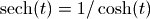 evaluated at  . Equivalently, the
Euler numbers give the coefficients of the Taylor series
. Equivalently, the
Euler numbers give the coefficients of the Taylor series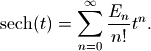
The Euler numbers are closely related to Bernoulli numbers and Bernoulli polynomials. They can also be evaluated in terms of Euler polynomials (see eulerpoly()) as 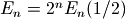.
Examples
Computing the first few Euler numbers and verifying that they agree with the Taylor series:
>>> from mpmath import * >>> mp.dps = 25; mp.pretty = True >>> [eulernum(n) for n in range(11)] [1.0, 0.0, -1.0, 0.0, 5.0, 0.0, -61.0, 0.0, 1385.0, 0.0, -50521.0] >>> chop(diffs(sech, 0, 10)) [1.0, 0.0, -1.0, 0.0, 5.0, 0.0, -61.0, 0.0, 1385.0, 0.0, -50521.0]
Euler numbers grow very rapidly. eulernum() efficiently computes numerical approximations for large indices:
>>> eulernum(50) -6.053285248188621896314384e+54 >>> eulernum(1000) 3.887561841253070615257336e+2371 >>> eulernum(10**20) 4.346791453661149089338186e+1936958564106659551331
Comparing with an asymptotic formula for the Euler numbers:
>>> n = 10**5 >>> (-1)**(n//2) * 8 * sqrt(n/(2*pi)) * (2*n/(pi*e))**n 3.69919063017432362805663e+436961 >>> eulernum(n) 3.699193712834466537941283e+436961
Pass exact=True to obtain exact values of Euler numbers as integers:
>>> print(eulernum(50, exact=True)) -6053285248188621896314383785111649088103498225146815121 >>> print(eulernum(200, exact=True) % 10**10) 1925859625 >>> eulernum(1001, exact=True) 0
eulerpoly()¶
- mpmath.eulerpoly(n, z)¶
Evaluates the Euler polynomial
 , defined by the generating function
representation
, defined by the generating function
representation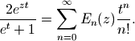
The Euler polynomials may also be represented in terms of Bernoulli polynomials (see bernpoly()) using various formulas, for example
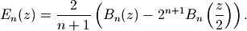
Special values include the Euler numbers (see eulernum()).
Examples
Computing the coefficients of the first few Euler polynomials:
>>> from mpmath import * >>> mp.dps = 25; mp.pretty = True >>> for n in range(6): ... chop(taylor(lambda z: eulerpoly(n,z), 0, n)) ... [1.0] [-0.5, 1.0] [0.0, -1.0, 1.0] [0.25, 0.0, -1.5, 1.0] [0.0, 1.0, 0.0, -2.0, 1.0] [-0.5, 0.0, 2.5, 0.0, -2.5, 1.0]
Evaluation for arbitrary
:>>> eulerpoly(2,3) 6.0 >>> eulerpoly(5,4) 423.5 >>> eulerpoly(35, 11111111112) 3.994957561486776072734601e+351 >>> eulerpoly(4, 10+20j) (-47990.0 - 235980.0j) >>> eulerpoly(2, '-3.5e-5') 0.000035001225 >>> eulerpoly(3, 0.5) 0.0 >>> eulerpoly(55, -10**80) -1.0e+4400 >>> eulerpoly(5, -inf) -inf >>> eulerpoly(6, -inf) +inf
Computing Euler numbers:
>>> 2**26 * eulerpoly(26,0.5) -4087072509293123892361.0 >>> eulernum(26) -4087072509293123892361.0
Evaluation is accurate for large
and small :>>> eulerpoly(100, 0.5) 2.29047999988194114177943e+108 >>> eulerpoly(1000, 10.5) 3.628120031122876847764566e+2070 >>> eulerpoly(10000, 10.5) 1.149364285543783412210773e+30688
Bell numbers and polynomials¶
bell()¶
- mpmath.bell(n, x)¶
For
a nonnegative integer, bell(n,x) evaluates the Bell
polynomial  , the first few of which are
, the first few of which are
If
 or bell() is called with only one argument, it
gives the -th Bell number , which is the number of
partitions of a set with elements. By setting the precision to
at least
or bell() is called with only one argument, it
gives the -th Bell number , which is the number of
partitions of a set with elements. By setting the precision to
at least  digits, bell() provides fast
calculation of exact Bell numbers.
digits, bell() provides fast
calculation of exact Bell numbers.In general, bell() computes

where
 is the generalized exponential function implemented
by polyexp(). This is an extension of Dobinski’s formula [1],
where the modification is the sinc term ensuring that is
continuous in ; bell() can thus be evaluated,
differentiated, etc for arbitrary complex arguments.
is the generalized exponential function implemented
by polyexp(). This is an extension of Dobinski’s formula [1],
where the modification is the sinc term ensuring that is
continuous in ; bell() can thus be evaluated,
differentiated, etc for arbitrary complex arguments.Examples
Simple evaluations:
>>> from mpmath import * >>> mp.dps = 25; mp.pretty = True >>> bell(0, 2.5) 1.0 >>> bell(1, 2.5) 2.5 >>> bell(2, 2.5) 8.75
Evaluation for arbitrary complex arguments:
>>> bell(5.75+1j, 2-3j) (-10767.71345136587098445143 - 15449.55065599872579097221j)
The first few Bell polynomials:
>>> for k in range(7): ... nprint(taylor(lambda x: bell(k,x), 0, k)) ... [1.0] [0.0, 1.0] [0.0, 1.0, 1.0] [0.0, 1.0, 3.0, 1.0] [0.0, 1.0, 7.0, 6.0, 1.0] [0.0, 1.0, 15.0, 25.0, 10.0, 1.0] [0.0, 1.0, 31.0, 90.0, 65.0, 15.0, 1.0]
The first few Bell numbers and complementary Bell numbers:
>>> [int(bell(k)) for k in range(10)] [1, 1, 2, 5, 15, 52, 203, 877, 4140, 21147] >>> [int(bell(k,-1)) for k in range(10)] [1, -1, 0, 1, 1, -2, -9, -9, 50, 267]
Large Bell numbers:
>>> mp.dps = 50 >>> bell(50) 185724268771078270438257767181908917499221852770.0 >>> bell(50,-1) -29113173035759403920216141265491160286912.0
Some even larger values:
>>> mp.dps = 25 >>> bell(1000,-1) -1.237132026969293954162816e+1869 >>> bell(1000) 2.989901335682408421480422e+1927 >>> bell(1000,2) 6.591553486811969380442171e+1987 >>> bell(1000,100.5) 9.101014101401543575679639e+2529
A determinant identity satisfied by Bell numbers:
>>> mp.dps = 15 >>> N = 8 >>> det([[bell(k+j) for j in range(N)] for k in range(N)]) 125411328000.0 >>> superfac(N-1) 125411328000.0
References
Prime counting functions¶
primepi()¶
- mpmath.primepi(x)¶
Evaluates the prime counting function,
 , which gives
the number of primes less than or equal to
, which gives
the number of primes less than or equal to  . The argument
may be fractional.
. The argument
may be fractional.The prime counting function is very expensive to evaluate precisely for large
, and the present implementation is
not optimized in any way. For numerical approximation of the
prime counting function, it is better to use primepi2()
or riemannr().Some values of the prime counting function:
>>> from mpmath import * >>> [primepi(k) for k in range(20)] [0, 0, 1, 2, 2, 3, 3, 4, 4, 4, 4, 5, 5, 6, 6, 6, 6, 7, 7, 8] >>> primepi(3.5) 2 >>> primepi(100000) 9592
primepi2()¶
- mpmath.primepi2(x)¶
Returns an interval (as an mpi instance) providing bounds for the value of the prime counting function
. For small
, primepi2() returns an exact interval based on
the output of primepi(). For  , a loose interval
based on Schoenfeld’s inequality
, a loose interval
based on Schoenfeld’s inequality
is returned. This estimate is rigorous assuming the truth of the Riemann hypothesis, and can be computed very quickly.
Examples
Exact values of the prime counting function for small
:>>> from mpmath import * >>> mp.dps = 15; mp.pretty = True >>> iv.dps = 15; iv.pretty = True >>> primepi2(10) [4.0, 4.0] >>> primepi2(100) [25.0, 25.0] >>> primepi2(1000) [168.0, 168.0]
Loose intervals are generated for moderately large
:>>> primepi2(10000), primepi(10000) ([1209.0, 1283.0], 1229) >>> primepi2(50000), primepi(50000) ([5070.0, 5263.0], 5133)
As
increases, the absolute error gets worse while the relative
error improves. The exact value of  is
1925320391606803968923, and primepi2() gives 9 significant
digits:
is
1925320391606803968923, and primepi2() gives 9 significant
digits:>>> p = primepi2(10**23) >>> p [1.9253203909477020467e+21, 1.925320392280406229e+21] >>> mpf(p.delta) / mpf(p.a) 6.9219865355293e-10
A more precise, nonrigorous estimate for
can be
obtained using the Riemann R function (riemannr()).
For large enough , the value returned by primepi2()
essentially amounts to a small perturbation of the value returned by
riemannr():>>> primepi2(10**100) [4.3619719871407024816e+97, 4.3619719871407032404e+97] >>> riemannr(10**100) 4.3619719871407e+97
riemannr()¶
- mpmath.riemannr(x)¶
Evaluates the Riemann R function, a smooth approximation of the prime counting function
(see primepi()). The Riemann
R function gives a fast numerical approximation useful e.g. to
roughly estimate the number of primes in a given interval.The Riemann R function is computed using the rapidly convergent Gram series,

From the Gram series, one sees that the Riemann R function is a well-defined analytic function (except for a branch cut along the negative real half-axis); it can be evaluated for arbitrary real or complex arguments.
The Riemann R function gives a very accurate approximation of the prime counting function. For example, it is wrong by at most 2 for
 , and for
, and for  differs from the exact
value of by 79, or less than two parts in a million.
It is about 10 times more accurate than the logarithmic integral
estimate (see li()), which however is even faster to evaluate.
It is orders of magnitude more accurate than the extremely
fast
differs from the exact
value of by 79, or less than two parts in a million.
It is about 10 times more accurate than the logarithmic integral
estimate (see li()), which however is even faster to evaluate.
It is orders of magnitude more accurate than the extremely
fast  estimate.
estimate.Examples
For small arguments, the Riemann R function almost exactly gives the prime counting function if rounded to the nearest integer:
>>> from mpmath import * >>> mp.dps = 15; mp.pretty = True >>> primepi(50), riemannr(50) (15, 14.9757023241462) >>> max(abs(primepi(n)-int(round(riemannr(n)))) for n in range(100)) 1 >>> max(abs(primepi(n)-int(round(riemannr(n)))) for n in range(300)) 2
The Riemann R function can be evaluated for arguments far too large for exact determination of
to be computationally
feasible with any presently known algorithm:>>> riemannr(10**30) 1.46923988977204e+28 >>> riemannr(10**100) 4.3619719871407e+97 >>> riemannr(10**1000) 4.3448325764012e+996
A comparison of the Riemann R function and logarithmic integral estimates for
using exact values of  up to
up to  .
The fractional error is shown in parentheses:
.
The fractional error is shown in parentheses:>>> exact = [4,25,168,1229,9592,78498,664579,5761455,50847534] >>> for n, p in enumerate(exact): ... n += 1 ... r, l = riemannr(10**n), li(10**n) ... rerr, lerr = nstr((r-p)/p,3), nstr((l-p)/p,3) ... print("%i %i %s(%s) %s(%s)" % (n, p, r, rerr, l, lerr)) ... 1 4 4.56458314100509(0.141) 6.1655995047873(0.541) 2 25 25.6616332669242(0.0265) 30.1261415840796(0.205) 3 168 168.359446281167(0.00214) 177.609657990152(0.0572) 4 1229 1226.93121834343(-0.00168) 1246.13721589939(0.0139) 5 9592 9587.43173884197(-0.000476) 9629.8090010508(0.00394) 6 78498 78527.3994291277(0.000375) 78627.5491594622(0.00165) 7 664579 664667.447564748(0.000133) 664918.405048569(0.000511) 8 5761455 5761551.86732017(1.68e-5) 5762209.37544803(0.000131) 9 50847534 50847455.4277214(-1.55e-6) 50849234.9570018(3.35e-5)
The derivative of the Riemann R function gives the approximate probability for a number of magnitude
to be prime:>>> diff(riemannr, 1000) 0.141903028110784 >>> mpf(primepi(1050) - primepi(950)) / 100 0.15
Evaluation is supported for arbitrary arguments and at arbitrary precision:
>>> mp.dps = 30 >>> riemannr(7.5) 3.72934743264966261918857135136 >>> riemannr(-4+2j) (-0.551002208155486427591793957644 + 2.16966398138119450043195899746j)
Cyclotomic polynomials¶
cyclotomic()¶
- mpmath.cyclotomic(n, x)¶
Evaluates the cyclotomic polynomial 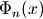, defined by
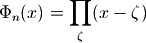
where 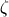 ranges over all primitive
-th roots of unity
(see unitroots()). An equivalent representation, used
for computation, is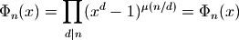
where 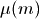 denotes the Moebius function. The cyclotomic polynomials are integer polynomials, the first of which can be written explicitly as
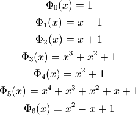
Examples
The coefficients of low-order cyclotomic polynomials can be recovered using Taylor expansion:
>>> from mpmath import * >>> mp.dps = 15; mp.pretty = True >>> for n in range(9): ... p = chop(taylor(lambda x: cyclotomic(n,x), 0, 10)) ... print("%s %s" % (n, nstr(p[:10+1-p[::-1].index(1)]))) ... 0 [1.0] 1 [-1.0, 1.0] 2 [1.0, 1.0] 3 [1.0, 1.0, 1.0] 4 [1.0, 0.0, 1.0] 5 [1.0, 1.0, 1.0, 1.0, 1.0] 6 [1.0, -1.0, 1.0] 7 [1.0, 1.0, 1.0, 1.0, 1.0, 1.0, 1.0] 8 [1.0, 0.0, 0.0, 0.0, 1.0]
The definition as a product over primitive roots may be checked by computing the product explicitly (for a real argument, this method will generally introduce numerical noise in the imaginary part):
>>> mp.dps = 25 >>> z = 3+4j >>> cyclotomic(10, z) (-419.0 - 360.0j) >>> fprod(z-r for r in unitroots(10, primitive=True)) (-419.0 - 360.0j) >>> z = 3 >>> cyclotomic(10, z) 61.0 >>> fprod(z-r for r in unitroots(10, primitive=True)) (61.0 - 3.146045605088568607055454e-25j)
Up to permutation, the roots of a given cyclotomic polynomial can be checked to agree with the list of primitive roots:
>>> p = taylor(lambda x: cyclotomic(6,x), 0, 6)[:3] >>> for r in polyroots(p[::-1]): ... print(r) ... (0.5 - 0.8660254037844386467637232j) (0.5 + 0.8660254037844386467637232j) >>> >>> for r in unitroots(6, primitive=True): ... print(r) ... (0.5 + 0.8660254037844386467637232j) (0.5 - 0.8660254037844386467637232j)
Arithmetic functions¶
mangoldt()¶
- mpmath.mangoldt(n)¶
Evaluates the von Mangoldt function 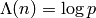 if 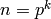 a power of a prime, and 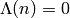 otherwise.
Examples
>>> from mpmath import * >>> mp.dps = 25; mp.pretty = True >>> [mangoldt(n) for n in range(-2,3)] [0.0, 0.0, 0.0, 0.0, 0.6931471805599453094172321] >>> mangoldt(6) 0.0 >>> mangoldt(7) 1.945910149055313305105353 >>> mangoldt(8) 0.6931471805599453094172321 >>> fsum(mangoldt(n) for n in range(101)) 94.04531122935739224600493 >>> fsum(mangoldt(n) for n in range(10001)) 10013.39669326311478372032